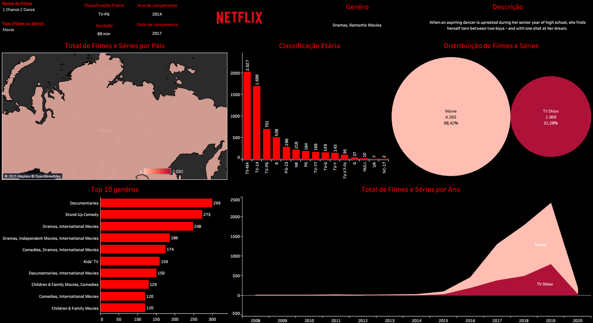
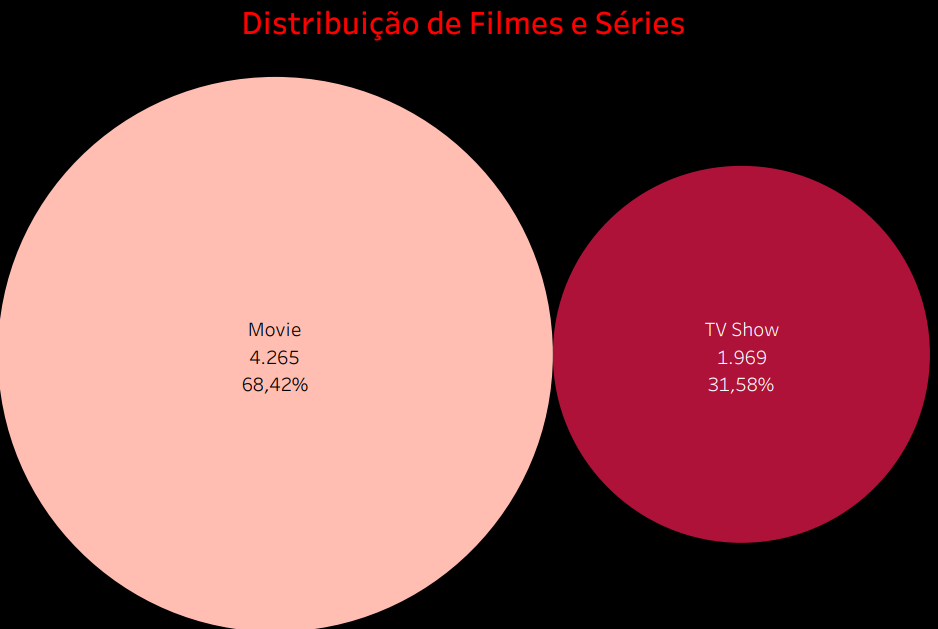
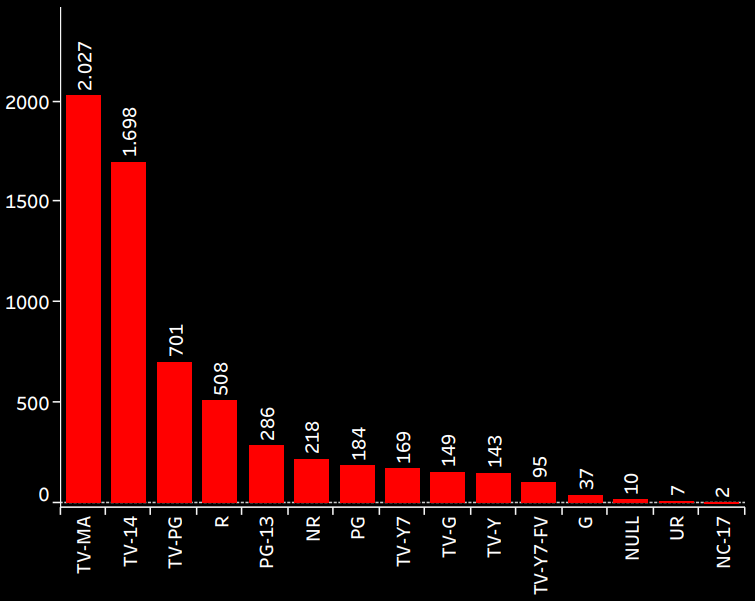
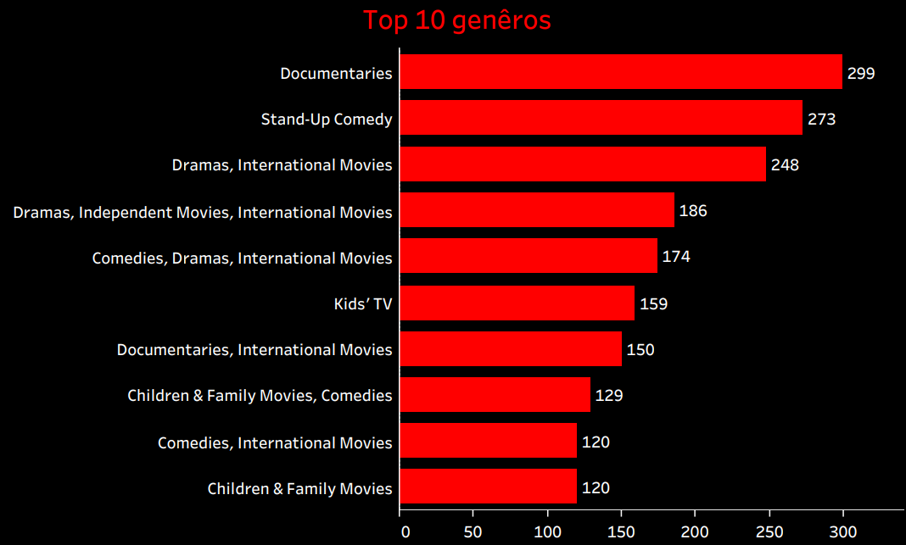
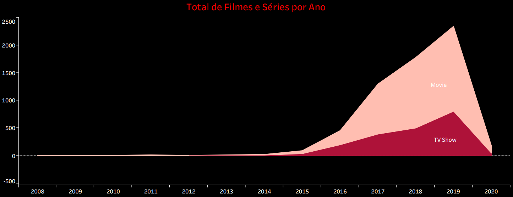

Project: Netflix Dashboard - Content Analysis and Streaming Trends
Introduction
This project presents an analytical Dashboard focused on Netflix’s vast content library. The main objective was to explore and visualize movie and series trends, genre distribution, age ratings, and the volume of releases over the years. This panel was built using the Tableau tool. The dashboard aims to empower content analysts and market strategists to better understand Netflix’s portfolio and audience preferences.
Note: The dataset contains data from an American source, so some features may not be familiar.
Project Structure
The dashboard is organized to offer a multifaceted view of Netflix’s content:
- Content Overview: Distribution between movies and series, and their respective quantities.
- Age Rating: Analysis of the variety of ratings (TV-MA, TV-14, TV-PG, etc.) and the proportion of each.
- Top 10 Genres: Ranking of the most prevalent genres on the platform.
- Release Trend by Year: Evolution of the volume of movies and series added annually.
- Content Distribution by Country: A map to visualize the origin or geographical focus of the content.
- Title Detail: Specific information about a title, such as name, type, rating, release year, duration, and description.
Technologies Used
For the construction of this analytical dashboard, the tool employed was:
- Tableau Desktop: Used to connect the data source, perform the necessary transformations, create calculations, and build the interactive visuals that make up the dashboard. The choice of Tableau allowed exploring its native design and analysis capabilities, with the design and layout being developed directly within the Tableau environment.
ETL Process (Extraction, Transformation, and Loading)
The ETL process for the Netflix Dashboard was straightforward, leveraging the existing data structure:
- Extraction: Raw data was extracted from a single CSV file,
netflix_titles.csv. This file contained comprehensive information about each title available on the platform, including its type (movie or series), genre, age rating, release year, duration, description, and countries of origin. - Transformation: In Tableau, the necessary transformations were performed to prepare the data for visualization. This included:
- Adjustments to data types and cleaning of possible inconsistencies.
- Creation of calculated fields and hierarchies for more in-depth analyses (e.g., to group years or categories).
- Standardization of terms to ensure consistency in the visuals.
- Loading: After connection and transformations, the data was loaded into the Tableau environment, making it ready to be explored through the creation of interactive charts, tables, and maps.
Dashboard
The dashboard features a clear and intuitive layout, organized to facilitate navigation and understanding of Netflix content trends. The interface combines pie/donut charts for proportions, bar charts for rankings and distributions, line charts for temporal trends, and a geographical map. Interactivity is a strong point, allowing users to explore data from different angles and gain insights into titles, genres, and release patterns.

Insights
The analysis of the data presented in the dashboard revealed valuable insights into Netflix’s content:
- Content Distribution Overview:
- The platform is predominantly composed of Movies, accounting for 68.42% of the total, with 4,265 titles.
- TV Shows make up 31.58%, with 1,969 titles. This indicates a Netflix strategy to offer a wide range of movies, complemented by a strong catalog of series.

- Distribution by Age Rating:
- The most common ratings are TV-MA (2,027 titles), TV-14 (1,698 titles), and TV-PG (701 titles).
- This suggests that Netflix has a considerable amount of content aimed at adult or adolescent audiences (TV-MA and TV-14), but also offers a good variety for the whole family (TV-PG). Other ratings such as R, PG-13, G, TV-Y, and NC-17 complete the catalog’s diversity.

- Top 10 Genres:
- Documentaries lead with 299 titles, followed by Stand-Up Comedy (273 titles).
- Other popular genres include “Dramas, International Movies” (248), “Dramas, Independent Movies, International Movies” (186), “Comedies, Dramas, International Movies” (174), “Kids’ TV” (159), “Documentaries, International Movies” (150), “Children & Family Movies, Comedies” (129), “Comedies, International Movies” (120), and “Children & Family Movies” (120).
- The predominance of documentaries and comedy, and the constant presence of international films and dramas, indicate a diversified content strategy, catering to niches and the global audience.

- Content by Release Year:
- The volume of releases grew significantly over the years, with a notable peak between 2017 and 2020. For example, 2019 and 2020 show the largest volumes of movies and series added.
- This increase reflects Netflix’s period of strong investment in content production and acquisition to expand its library and attract new subscribers.

- Title Detail (Example: 1 Chance 2 Dance):
- The dashboard allows delving into specific titles, such as the movie “1 Chance 2 Dance”, released in 2014 with 89 minutes of duration and added to Netflix in 2017. Rated TV-PG, it falls under the “Dramas, Romantic Movies” genres, with the description provided on the platform. This functionality highlights the granularity of the available analysis.
Considerations
The dashboard offers a strategic view to understand Netflix’s catalog and content consumption trends. Based on the insights obtained, some important considerations emerge:
- Content Strategy: The predominance of movies and the wide range of genres, especially documentaries and comedy, signal an investment in diversity to attract different audience segments. The analysis of age ratings can guide content creation or acquisition for specific audiences.
- Historical Growth: The significant increase in releases in recent years (2017-2020) reflects Netflix’s aggressive expansion phase, which can be compared with competitors’ strategies or market maturity.
Conclusion
The Netflix Dashboard was an effective analytical tool that transformed raw content data into actionable intelligence. Its main contribution lies in its ability to:
- Provide a clear view of Netflix’s catalog composition by type, genre, and age rating.
- Identify historical release patterns and the evolution of the content library.
- Demonstrate proficiency in using Tableau to build robust and intuitive analyses.
This project solidifies the ability to perform complex data analyses, interpret large volumes of information, and present insights clearly and impactfully, validating the capacity to work with different Business Intelligence tools.